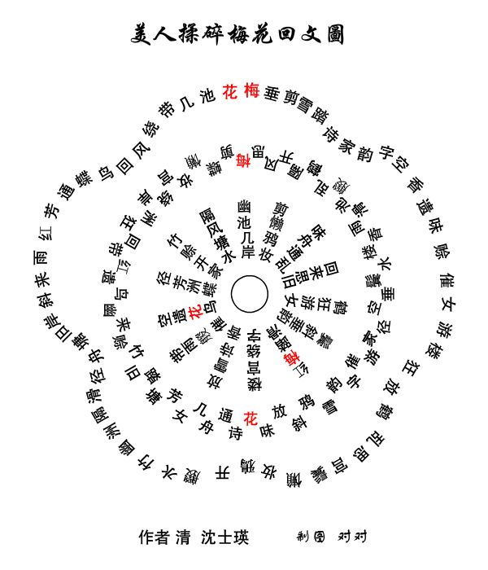

注：原诗共八百四十字，纵横各二十九字，方阵纵、横、斜、交互、正、反读或退一字、迭一字读均可成诗，诗有三、四、五、六、七言不等，目前统计约可组成七千九百五十八首诗。例如从最右侧直行开始，随文势折返，可发现右上角红色区块外围顺时针读为「仁智怀德圣虞唐，贞志笃终誓穹苍，钦所感想妄淫荒，心忧增慕怀惨伤」，而原诗若以逆时针方向读则变为「伤惨怀慕增忧心，荒淫妄想感所钦，苍穹誓终笃志真，唐虞圣德怀智仁」，堪称回文诗中之千古力作！
琴清流楚激弦商秦曲发声悲摧藏音和咏思惟空堂心忧增慕怀惨伤仁
芳廊东步阶西游王姿淑窈窕伯邵南周风兴自后妃荒经离所怀叹嗟智
兰休桃林阴翳桑怀归思广河女卫郑楚樊厉节中闱淫遐旷路伤中情怀
凋翔飞燕巢双鸠土迤逶路遐志咏歌长叹不能奋飞妄清帏房君无家德
茂流泉清水激扬眷颀其人硕兴齐商双发歌我衮衣想华饰容朗镜明圣
熙长君思悲好仇旧蕤葳桀翠荣曜流华观冶容为谁感英曜珠光纷葩虞
阳愁叹发容摧伤乡悲情我感伤情征宫羽同声相追所多思感谁为荣唐
春方殊离仁君荣身苦惟艰生患多殷忧缠情将如何钦苍穹誓终笃志贞
墙禽心滨均深身加怀忧是婴藻文繁虎龙宁自感思岑形荧城荣明庭妙
面伯改汉物日我兼思何漫漫荣曜华雕旌孜孜伤情幽未犹倾苟难闱显
殊在者之品润乎愁苦艰是丁丽壮观饰容侧君在时岩在炎在不受乱华
意诚惑步育浸集悴我生何冤充颜曜绣衣梦想劳形峻慎盛戒义消作重
感故昵飘施愆殃少章时桑诗端无终始诗仁颜贞寒嵯深兴后姬源人荣
故遗亲飘生思愆精徽盛医风比平始璇情贤丧物岁峨虑渐孽班祸谗章
新旧闻离天罪辜神恨昭盛兴作苏心玑明别改知识深微至嬖女因奸臣
霜废远微地积何遐微业孟鹿丽氏诗图显行华终凋渊察大赵婕所佞贤
水故离隔德怨因幽元倾宣鸣辞理兴义怨士容始松重远伐氏好恃凶惟
齐君殊乔贵其备旷悼思伤怀日往感年衰念是旧愆涯祸用飞辞恣害圣
洁子我木平根当远叹水感悲思忧远劳情谁为独居经在昭燕辇极我配
志惟同谁均难苦离戚戚情哀慕岁殊叹时贱女怀欢网防青实汉骄忠英
清新衾阴匀寻辛凤知我者谁世异浮寄倾鄙贱何如罗萌青生成盈贞皇
纯贞志一专所当麟沙流颓逝异浮沉华英翳曜潜阳林西昭景薄榆桑伦
望微精感通明神龙驰若然倏逝惟时年殊白日西移光滋愚谗漫顽凶匹
谁云浮寄身轻飞昭亏不盈无倏必盛有衰无日不陂流蒙谦退休孝慈离
思辉光饬桀殊文德离忠体一达心意志殊愤激何施电疑危远家和雍飘
想群离散妾孤遗怀仪容仰俯荣华丽饰身将无谁为逝容节敦贞淑思浮
怀悲哀声殊乖分圣赀何情忧感惟哀志节上通神祇推持所贞记自恭江
所春伤应翔雁归皇辞成者作体下遗葑菲采者无差生从是敬孝为基湘
亲刚柔有女为贱人房幽处己悯微身长路悲旷感生民梁山殊塞隔河津
右上角红色区块外围顺时针读为：
仁智怀德圣虞唐，贞志笃终誓穹苍。
钦所感想妄淫荒，心忧增慕怀惨伤。
而此诗若以逆时针方向读则变为：
伤惨怀慕增忧心，荒淫妄想感所钦。
苍穹誓终笃志真，唐虞圣德怀智仁。
右上角红色区块外围（横排）从右至左读为：
伤惨怀慕增忧心，堂空惟思咏和音；
藏摧悲声发曲秦，商弦激楚流清琴。
而此诗若以倒读则变为：
琴清流楚激弦商，秦曲发声悲摧藏。
音和咏思惟空堂，心忧增慕怀惨伤。

读作：
山树高，鸟啼悲。泉水深，鲤鱼肥。空仓雀，常苦饥。吏人妇，会夫稀。出门望，见白衣。谓当是，而更非。还入门，中心悲。北上堂，西入阶。急机绞，抒声催。长叹息，当语谁。君有行，妾念之。山有日，还无期。结巾带，长相思。君忘妾，未知之。妾忘君，罪当治。安有行，宜知之。黄者金，白者王。高者山，下者谷。姓者苏，字伯玉。人才多，知谋足。家居长安身在蜀，何情马蹄归不数。羊肉千斤酒百科，令君马肥麦与粟。今时人，智不足。与其书，不能读，当从中央周四角。
天连泗水水连天，烟锁孤村村锁烟。
树绕藤萝萝绕树，川通巫峡峡通川。
酒迷醉客客迷酒，船送行人人送船。
此会应难难会此，传今话古古今传。
垂帘画阁画帘垂，谁系怀思怀系谁？
影弄花枝花弄影，丝牵柳线柳牵丝。
眼波横泪横波眼，眉黛愁浓愁黛眉。
永夜寒灯寒夜永，期归梦还梦归期。
冬伴春来春伴冬，风随雨洒雨随风。
鸟醉花香花醉鸟，松恋雪洁雪恋松。
盐飞乱蝶舞，花落飘粉奁。
奁粉飘落花，舞蝶乱飞盐。
云枝间石峰，水脉浸山岸。清池戏鹄聚，树秋飞叶散。
回文
散叶飞秋树，聚鹄戏池清。岸山浸水脉，峰石间枝云。
斜峰绕曲径，耸石带山连。花余拂戏鸟，树密隐鸣蝉。
回文
蝉鸣隐密树，鸟戏拂余花，连山带石耸，径曲绕峰斜。
春梅杂落雪，发花几时开？真颜尽兴饮，仁里愿同来。
回文
来同愿里人，饮兴尽颜真。开时几花发？雪落杂梅春。
迟迟日气暖，漫漫雪天春。知音醉欲饮，思见此交亲。
回文
亲交见此思，欲饮醉音知，春天雪漫漫，暖气日迟迟。
碧芜平野旷，黄菊晚秋深。意倦留甘饮，身闲累苦吟。
回文
吟苦累闲身，饮甘留倦意。深秋晚菊黄，旷野平芜碧。
春：花枝弄影照窗纱映日斜
花枝弄影照窗纱，影照窗纱映日斜；斜日映纱窗照影，纱窗照影弄枝花。
夏：莲新长水贴青钱数点圆
秋：悠云白雁过南楼半色秋
冬：梅枝几点雪花开春信来
枯眼望遥山隔水，往来曾见几心知。壶空怕酌一杯酒，笔下难成和韵诗。
迷路阻人离别久，讯音无雁寄回迟。孤灯夜守长寥寂，夫忆妻兮父忆儿。
回文
儿忆父兮妻忆夫，寂寥长守夜灯孤。迟回寄雁无音讯，久别离人阻路途。
诗韵和成难下笔，酒杯一酌怕空壶。知心几见曾来往，水隔山遥望眼枯。
空花落尽酒倾漾，日上山融雪涨江。红焙浅瓯新火活，龙团小辗斗晴窗。
回文
窗晴斗辗小团龙，活火新瓯浅焙红。江涨雪融山上日，漾倾酒尽落花空。
春晚落花余碧草，夜凉低月半梧桐。人随雁远边城暮，雨映疏帘绣阁空。
回文
空阁绣帘疏映雨，暮城边远雁随人。桐梧半月低凉夜，草碧余花落晚春。
马趁香微路远，沙笼月淡烟斜。渡波清彻映妍华，倒绿枝寒凤挂。
挂凤寒枝绿倒，华妍映彻清波。渡斜烟淡月笼沙，远路微香趁马。
峤南江浅红梅小，小梅红浅江南峤。窥我向疏篱，篱疏向我窥。
老人行即到，到即行人老。离别惜残枝，枝残惜别离。
晚红飞尽春寒浅，浅寒春尽飞红晚。樽酒绿繁荫，荫繁绿酒樽。
老仙诗句好，好句诗仙老。长恨送年芳，芳年送恨长。
雾窗寒对遥天暮，暮天遥对寒窗雾。花落正啼鸦，鸦啼正落花。
裒罗垂影瘦，瘦影垂罗裒。风剪—丝红，红丝一剪风。
衾染泪香红，冷睡吟哀忆恋空，忘尽盟誓深似海，谁同？意蜜心诚独有侬。
侬有独诚心，蜜意同谁海似深，誓盟尽忘空恋忆，哀吟。睡冷红香泪染衾。
春雨晴来访友家，雨晴来访友家花。晴来访友家花径，来访友家花径斜。
夏沼风荷翠叶长，沼风荷翠叶长香。风荷翠叶长香满，荷翠叶长香满塘。
秋月横空奏笛声，月横空奏笛声清。横空奏笛声清怨，空奏笛声清怨生。
冬阁寒呼客赏梅，阁寒呼客赏梅开。寒呼客赏梅开雪，呼客赏梅开雪醅。
每首仅十字，上两句用辘轳体，下两句用回文，往复回读演译成二十八字七言绝句。
春：莺啼岸柳弄春晴夜月明
莺啼岸柳弄春晴，柳弄春晴夜月明。明月夜晴春弄柳，晴春弄柳岸啼莺。
夏：香莲碧水动风凉夏日长
香莲碧水动风凉，水动风凉夏日长。长日夏凉风动水，凉风动水碧莲香。
秋：秋江楚雁宿沙洲浅水流
秋江楚雁宿沙洲，雁宿沙洲浅水流。流水浅洲沙宿雁，洲沙宿雁楚江秋。
冬：红炉透炭炙寒风御隆冬
红炉透炭炙寒风，炭炙寒风御隆冬。冬隆御风寒炙炭，风寒炙炭透炉红。
正读是七律
明窗半掩小庭幽，夜静灯残未得留。风冷结阴寒落叶，别离长倚望高楼。
迟迟月影移斜竹，叠叠诗余赋旅愁。将欲断肠随断梦，雁飞连阵几声秋。
反读，则是《虞美人》词
秋声几阵连飞雁，梦断随肠断。欲将愁旅赋余诗，叠叠竹斜移影月迟迟。
楼高望倚长离别，叶落寒阴结。冷风留得未残灯，静夜幽庭小掩半窗明。
孤楼倚梦寒灯隔，细雨梧窗逼。冷风珠露扑钗虫，络索玉环，圆鬓凤玲珑。肤凝薄粉残妆悄，影对疏栏小。院空芜绿引香浓，冉冉近黄昏，月映帘红。
倒读：
红帘映月昏黄近，冉冉浓香引。绿芜空院小栏疏，对影悄妆，残粉薄凝肤。珑玲凤鬓圆环玉，索络虫钗扑。露珠风冷逼窗梧，雨细隔灯，寒梦倚楼孤。
重新标点，成七律：
孤楼倚梦寒灯隔，细雨梧窗逼冷风。珠露扑钗虫络索，玉环圆鬓凤玲珑。
肤凝薄粉残妆悄，影对疏栏小院空。芜绿引香浓冉冉，近黄昏月映帘红。
倒读：
红帘映月昏黄近，冉冉浓香引绿芜。空院小栏疏对影，悄妆残粉薄凝肤。
珑玲凤鬓圆环玉，索络虫钗扑露珠。风冷逼窗梧雨细，隔灯寒梦倚楼孤。
落雪飞芳树，幽红雨淡霞。薄月迷香雾，流风舞艳花。
回文：
花艳舞风流，雾香迷月薄。霞淡雨红幽，树芳飞雪落。
轻舟一泛晚霞残，洁汉银蟾玉吐寒。楹倚静荫移沼树，阁涵虚白失霜峦。
清琴瀹茗和心洗，韵竹敲诗入梦刊。惊鹊绕枝风叶坠，声飘桂冷露浸浸。
回文：
浸浸露冷桂飘声，坠叶风枝绕鹊惊。刊梦入诗敲竹韵，洗心和茗瀹琴清。
峦霜失白虚涵阁，树沼移荫静倚楹。寒吐玉蟾银汉洁，残霞晚泛一舟轻。
香暗绕窗纱，半帘疏影遮。霜枝一挺干，玉树几开花。
傍水笼烟薄，隙墙穿月斜。芳梅喜淡雅，永日伴清茶。
其诗倒读也是咏梅佳韵：
茶清伴日永，雅淡喜梅芳。斜月穿墙隙，薄烟笼水傍。
花开几树玉，干挺一枝霜。遮影疏帘半，纱窗绕暗香。
兹图顺而逆、前而後，参互读之，都成韵语。中间读法毕备。一流水读，二回风读，三连环读，四脱蝉读，五穿花读，六夹蝶读，七断云读，八腰蜂读，九旋帆读，十归雁读。像鸣取义，神与口传。计图内藏七言律诗六首，绝句二十四首，共得梅花诗三十首。自此纵横反复，衍而伸之，虽千百万首，亦可得于五十六字之内，将不仅三十咏止也。
七律示例：
外圈
梅垂剪雪踏诗家，韵字空香遗味赊。
催女游楼狂放鹤，乱思宫鬓懒妆鸦。
开艐水竹幽洲隔，滑径舟塘旧岸斜。
来雨红芳通蝶鸟，回风绕带几池花。
回文
花池几带绕风回，鸟蝶通芳红雨来。
斜岸旧塘舟径滑，隔洲幽竹水艐开。
鸦妆懒鬓宫思乱，鹤放狂楼游女催。
赊味遗香空字韵，家诗踏雪剪垂梅。
中圈
思梅剪蝶懒妆宫，绕岸洲狂回带红。
遗鸟幽来赊竹旧，踏塘芳女几舟通。
诗花味放斜鸦雪，韵字催游家径空。
垂鬓水楼香雨滑，池艐乱鹤隔开风。
回文
风开隔鹤乱艐池，滑雨香楼水鬓垂。
空径家游催字韵，雪鸦斜放味花诗。
通舟几女芳塘踏，旧竹赊来幽鸟遗。
红带回狂洲岸绕，宫妆懒蝶剪梅思。
内圈
幽池几岸隔风塘，水竹赊开家径芳。
洲蝶空遗花鸟带，雨艐催放雪诗香。
楼宫绕字红梅踏，滑鬓斜垂韵鹤狂。
游女回来思旧味，舟通岸剪懒鸦妆。
回文
妆鸦懒剪岸通舟，味旧思来回女游。
狂鹤韵垂斜鬓滑，踏梅红字绕宫楼。
香诗雪放催艐雨，带鸟花遗空蝶洲。
芳径家开赊竹水，塘风隔岸几池幽。
前来翠霭积烟村，兴触诗人醉洒樽。悬涧水声琴入韵，列屏山景画留痕。
泉飞带雨穿虹架，树曲盘崖抱石吞。天接路高登步步，烟云起落碧当门。
回文：
门当碧落起云烟，步步高登路接天。吞石抱崖盘曲树，架虹空雨带飞泉。
痕留画景山屏列，韵入琴声水涧悬。樽酒醉人诗触兴，村烟积霭翠来前。
翠霭积烟村，诗人醉洒樽。水声琴入韵，山景画留痕。
带雨空虹架，盘崖抱石吞。路高登步步，起落碧当门。
回文
碧落起云烟，高登路接天。抱崖盘曲树，空雨带飞泉。
画景山屏列，琴声水涧悬。醉人诗触兴，积霭翠来前。
顺读
天连草色一川平，日映红花万树晴。泉滴洞中山滴翠，烟溪绿袅竹声清。
倒读
清声竹袅绿溪烟，翠滴山中洞滴泉。晴树万花红映日，平川一色草连天。
花开菊白桂争妍，好景留人宜晚天。霞落潭中波荡影，纱笼树色月笼烟。
回文：
烟笼月色树笼纱，影漾波中潭落霞。天晚留人宜景好,妍争桂白菊开花。
每句减去头二字：
菊白桂争妍，留人宜晚天。潭中波荡影，树色月笼烟。
每句五、六字跳过去：
花开菊白妍，好景留人天。霞落潭中影，纱笼树色烟。
其他读法如：
好景宜晚霞，月白天笼纱。潭中漾树影，波开留桂花。
由七百八十四字组成，纵横各二十八行，每行二十八字。图中描写的是春夏秋冬四季景色。若循着一定规律，可读出三至七言等不同类型的山水田园诗。图内有八十一格，暗合九九之数。解诗21900首，为一甲子之数，即365天×60年=21900。
春闹花滨环柳新雨戏禽燕逗春飞莺鹤翱天河戏蛙歌蛐啼野云荡鹤
锁雨迷溪落燕潭湖飞逐迷朦掩语迷绻浮璨傍林燕蝉鹂花村水逗朦
院蒲织绕来溦幽瀑迢蝶月苇苑烟莺月星云竹飞宿噪逐狎嬉蜻涨烟
深柳掩村流泉涔潺波隐悠壑深星阑夜凉风斜雨戏鹊莺逐蝶花舞夜
蹊梨河水漫湖淼溪幽燕蜻花道谷飘风花烟柳山逗隐迷鸯迷蜂迷雨
绕乌嫣映荡樱霞兰漪娇袅迷荫雨隐缱迷摇拂莲映水隐烟水花闹戏
林烟朦云戏蝶芬桃娆俊山迤林花嬉鹅鸭闹荷蒲摇波烟弥阁云飞鹅
翳游掩舞牵馥花蕾婷翠秀灿寂绿娱浮眠润映塘溪涛飘松沉绕逐鸣
松舍人鹊梅萝妍荷楚竹花桧槐池树萍雨蕉水环醉涌蔽梅日雁水乐
荫桑繁欣荣圃茵草绿嫩菀柳荫柏翠多柳绕舍烟朦月映霞落樱艳多
花径花鸳枝苔郁榕娇树棠雨荷树樱霞波松柳隐星嬉照鹦花晖星花
艳湿环戏沾茂畦蕊弇娱浥绽绿嫣颠飞隐潺荫炫燕童啾星荡垂映嫣
春烟蒙滨璨水新蒲绕禽闹柳春梅落鹤戏云河渡樵歌鹊飞野霞飘鹤
染荫水映柳波溪泉鸭嬉弥涨花熙升嬉逐漾绕荡绕飞欢浥艳漫舞娱
塞怡树山潺迷绕戏潺川河霜灿高图松漪雁霞塔苇瀑雨莺蕙花水云
秋零叶幽塘映舟飘霞流烟澹秋染枫娇凤翥高飞云萧竹曳摇菊香娇
灼暝樱潭梅泛来荡瀑溪水江绻熟嫣菊鸥升鸣山瀑风淞霞雪茶花蕊
棠芳山清波落去飞湖潺楚涔云花桂嫣月欢鹅喧隐驰迎舞冉柔美绽
柔川静秀树嬉鸥绕霞悠虹飘柔艳芍俏鹊嬉闹禽追雕浮云飘霞艳俏
娇风菊水松藏逐鹭水鹤冉波媚烟鹦花婉林溪鱼慕逐戏舟香雨媚童
蕊曳牵漾花荫鹊映憩落环月棠语弥戏悦霞远空隐波惊花梅雉戏逗
羞漪弄柳掩寺楼雨蒙洲茵卉羞栀悦鸟逝烟迢波涌涛映月佼水娱鸟
花鲤缠戏桃驻庙烟烟远横兰美薇落隐映渺水深腾飞戏松萱鹏禽掩
袅藤耍鹅凤闹藏弥迷峰隐荷苹梅香山峰波淼浪涧壑丽燕柔飞翔树
瘦僧吟游霞飞鸠隐刹岫峻岭瘦蝶飞遥海瀚浩渺山峭峰蜿袅冉烟遥
竹孤鸭飘蝶落来洑水碧岚水萧香莽水星莽寥荡峻劲拔舞兰姗远飞
箫嬉柏烟花逐去绕泉江潺艳雨山莉潺雪璨宇岭云柏雪竹芳舟花鹤
秋朦烟幽壑隐舟浮云流波凉秋澄水娇梅婷高天寒萧疏叶摇杉翠娇
青柏瘦影动云峰曲水清月伴松屹石横竹侧风雨兴龙浮云重岩叠岭云垂径卧花红霞袅盈菊芳庭瑞雪岭霞摩影疏林青
正读其一：
青柏瘦影动云峰，峰曲水清月伴松。
松屹石横竹侧风，风雨兴龙浮云重。
重岩叠岭云垂径，径卧花红霞袅盈。
盈菊芳庭瑞雪岭，岭霞摩影疏林青。
倒读其二：
青林疏影摩霞岭，岭雪瑞庭芳菊盈。
盈袅霞红花卧径，径垂云岭叠岩重。
重云浮龙兴雨风，风侧竹横石屹松。
松伴月清水曲峰，峰云动影瘦柏青。
正读其三：
青柏瘦影，影动云峰。峰曲水清，清月伴松。
松屹石横，横竹侧风。风雨兴龙，龙浮云重。
重岩叠岭，岭云垂径。径卧花红，红霞袅盈。
盈菊芳庭，庭瑞雪岭。岭霞摩影，影疏林青。
倒读其四：
青林疏影，影摩霞岭。岭雪瑞庭，庭芳菊盈。
盈袅霞红，红花卧径。径垂云岭，岭叠岩重。
重云浮龙，龙兴雨风。风侧竹横，横石屹松。
松伴月清，清水曲峰。峰云动影，影瘦柏青。
正读其五：
青柏瘦，云动影。峰曲水，伴月清。松屹石，侧竹横。风雨兴，云浮龙。
重岩叠，垂云岭。径卧花，袅霞红。盈菊芳，雪瑞庭。岭霞摩，林疏影。
倒读其六：
影林疏，霞摩影。岭雪瑞，菊芳庭。盈袅霞，卧花红。径垂云，岩叠岭。
重云浮，雨兴龙。风侧竹，屹石横。松伴月，曲水清。峰云动，柏瘦影。
正读其七：
青柏瘦影动，云峰曲水清。月伴松屹石，石横竹侧风，雨兴龙浮云，云重岩叠岭。
云垂径卧花，花红霞袅盈。菊芳庭瑞雪，雪岭霞摩影。疏林青柏瘦，瘦影动云峰。
倒读其八：
青林疏影摩，霞岭雪瑞庭。芳菊盈袅霞，霞红花卧径。垂云岭叠岩，岩重云浮龙。
兴雨风侧竹，竹横石屹松。伴月清水曲，曲峰云动影。瘦柏青林疏，疏影摩霞岭。
正读其九：
青柏瘦，影动云。
峰曲水清，月伴松屹石。
横竹侧风雨兴龙，浮云重岩，叠岭云垂径。
倒读其十：
径垂云，岭叠岩。重云浮龙，兴雨风侧竹。
横石屹松伴月清。水曲峰云动，影瘦柏青。
正读十一：
青,柏。
影瘦，云动。
清月伴，水曲峰。
风雨侧竹，松屹石横。
兴龙浮云重，岩叠云垂岭。
岭垂径卧花红，霞袅盈菊芳庭。
盈菊芳庭瑞雪岭,岭霞摩影疏林青。
倒读十二：
青林疏影摩霞岭，岭雪瑞庭芳菊盈。
庭芳菊盈袅霞，红花卧径垂岭。
岭垂云叠岩，重云浮龙兴。
横石屹松，竹侧雨风。
动云，瘦影。
柏，青。
鹤浮云斜山映波，波飘梅落日沉阁。阁松蔽月烟朦舍，舍水映荷闹鸭鹅。
鹅迷烟斜飞燕歌，歌蝉噪鹊逐花野。野啼蛐歌蛙戏河，河傍竹斜柳拂荷。
回文：
荷拂柳斜竹傍河，河戏蛙歌蛐啼野。野花逐鹊噪蝉歌，歌燕飞斜烟迷鹅。
鹅鸭闹荷映水舍，舍烟朦月蔽松阁，阁沉日落梅飘波。波映山斜云浮鹤。
秋暝山秀清潭幽，幽塘映舟来去鸥，鸥藏花柳牵风柔，柔蕊娇羞花袅瘦，
瘦孤柏幽烟飘游，游霞飞鸠去来舟，舟浮云流江碧岫，岫峰远洲落鹤悠。
回文：
悠鹤落洲远峰岫，岫碧江流云浮舟。舟来去鸠飞霞游，游飘烟幽柏孤瘦。
瘦袅花羞娇蕊柔，柔风牵柳花藏鸥。鸥去来舟映塘幽，幽潭清秀山暝秋。
春闹花滨溪绕村，村河乌林荫道深。深壑悠隐蝶逐禽，禽飞瀑涔幽潭新。
新燕来村水映云，云舞鹊欣馥梅芬。芬蕾楚嫩花灿林，林绕蹊深院锁春。
回文：
春锁院深蹊绕林，林灿花嫩楚蕾芬。芬梅馥欣鹊舞云，云映水村来燕新。
新潭幽涔瀑飞禽，禽逐蝶隐悠壑深。深道荫林乌河村，村绕溪滨花闹春。

阳字起二首读为：
阳春应曲一弹琴，月夜浮觞酒满斟。
香结篆丝烟袅袅，响传壶箭漏沉沉。
回文：
沉沉漏箭壶传响，袅袅烟丝篆结香。
斟满酒觞浮夜月，琴弹一曲应阳春。
阴字起二首读为：
阴晴半日静春芳，上下飞花野径香。
金奏听莺鸣曲院，剪抛看燕掠深塘。
回文：
塘深掠燕看抛剪，院曲鸣莺听奏金。
香径野花飞上下，芳春静日半晴阴。